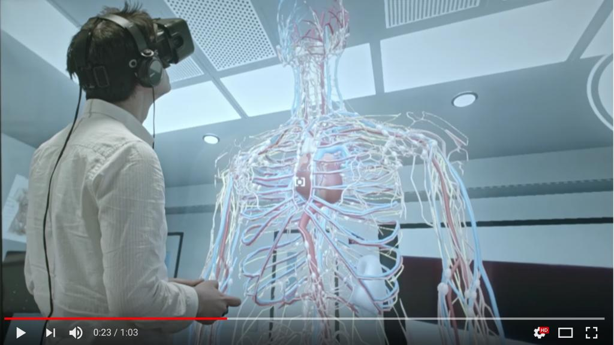
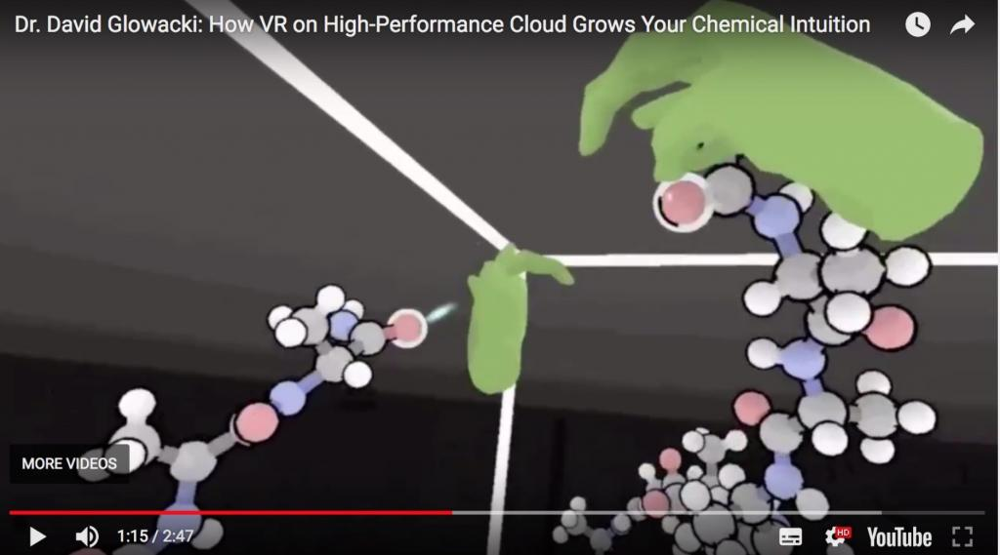
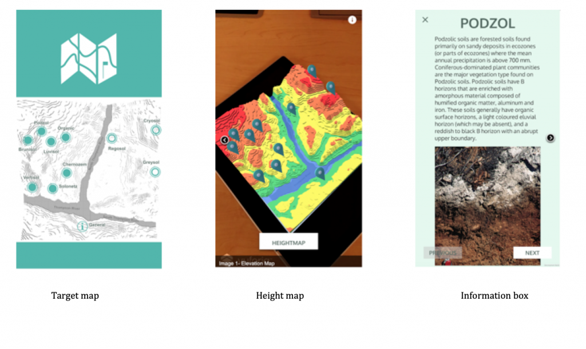

8.7.b. Tecnologias emergentes: realidade virtual e aumentada



À semelhança dos jogos sérios, a realidade virtual e a aumentada constituem tecnologias que existem há algum tempo, embora com um impacto relativamente modesto na educação nas suas fases iniciais de desenvolvimento. Contudo, desenvolvimentos tecnológicos recentes, que transferiram os mundos virtuais de ambientes bidimensionais (como o Second Life) para ambientes tridimensionais de imersão profunda, trouxeram maior atenção para o seu potencial na educação (para uma boa visão geral da história e potencial da realidade aumentada e virtual na educação, ver Elmqadden, 2019).
8.7b.1 O que são realidade virtual/aumentada/mista?
Uma definição simples destas tecnologias consiste na "imersão humana num mundo sintético" (Seidel e Chatelier, 1997). O Franklin Institute disponibiliza as seguintes definições mais detalhadas que procuram distinguir os diferentes tipos de mundos "sintéticos":
A realidade aumentada (AR) adiciona elementos digitais a uma visualização ao vivo, recorrendo frequentemente à câmera de um smartphone. Exemplos de experiências de realidade aumentada incluem as lentes do Snapchat e o jogo Pokémon Go.
A realidade virtual (VR) pressupõe uma experiência de imersão completa que bloqueia o mundo físico. Utilizando dispositivos de VR como o HTC Vive, o Oculus Rift ou o Google Cardboard, os utilizadores podem ser transportados para uma série de ambientes reais e imaginários, como o centro de uma colônia de pinguins ou o dorso de um dragão.
Numa experiência de realidade mista (MR), que combina elementos de AR e VR, os objetos do mundo real e os digitais interagem. A tecnologia de realidade mista está agora a começar a expandir-se, sendo o HoloLens da Microsoft um dos dispositivos pioneiros mais notáveis.
Utilizarei o termo "tecnologias imersivas" para designar globalmente todas estas tecnologias. Contudo, as descrições verbais revelar-se-ão sempre insuficientes para retratar experiências essencialmente multissensoriais, que conjugam visão, audição e movimento. Estas tecnologias necessitam de ser vivenciadas em primeira mão, mais do que explicadas, para serem plenamente compreendidas.
8.7b.2 Porquê utilizar tecnologias imersivas?
Apresentam-se vários motivos para a crescente utilização destas tecnologias na educação:
- o recente desenvolvimento de tecnologias de utilizador final de baixo custo e fáceis de usar (em particular os óculos/headsets);
- a imersão profunda em ambientes de aprendizagem tridimensionais e realistas, altamente apelativos/motivadores para o usuário final;
- a capacidade dos utilizadores finais manipularem objetos dentro do ambiente tridimensional;
- tecnologias de computação em nuvem mais potentes, que viabilizam o desenvolvimento de ambientes de aprendizagem mais complexos e realistas, conjugadas com avanços em tecnologias móveis e redes sem fios de alta velocidade;
- o potencial para desenvolver competências e conhecimentos que se revelariam difíceis, impossíveis ou perigosos em contextos reais.
8.7b.3 Exemplos de ambientes imersivos na educação
Face aos desafios identificados, poderá questionar-se por que razão se investiria em tecnologias imersivas na educação. Contudo, os seus benefícios potenciais mal começaram a ser explorados. Apresentam-se exemplos que demonstram os benefícios potenciais e mostram como alguns ambientes imersivos podem ser desenvolvidos com relativa facilidade.
8.7b.3.1 Realidade virtual
No Departamento de Química da Universidade de Bristol, em Inglaterra, o Dr. David Glowacki e a sua equipe criaram, no seu laboratório de VR, uma ferramenta interativa de modelação de dinâmica molecular sob a forma do Nano Simbox VR, permitindo a qualquer pessoa explorar e interagir no interior do mundo molecular invisível (O’Connor et al., 2018). O principal objetivo deste projeto consistiu em proporcionar uma percepção intuitiva do modo como as moléculas operam em múltiplas dimensões, capacitando investigadores e estudantes a compreender melhor o funcionamento dos nanomundos, resultando na formulação de melhores hipóteses para testes nesta área.
Conforme referem os autores no artigo científico:
Sob a perspectiva da modelação, a escala nanométrica representa um domínio de particular interesse, dado que os objetos de estudo (por exemplo, as moléculas) são invisíveis a olho nu, e o seu comportamento é regido por forças físicas e interações significativamente distintas daquelas que encontramos na nossa experiência fenomenológica quotidiana. Em domínios imperceptíveis a olho nu como este, modelos eficazes são vitais para proporcionar os insights necessários ao avanço da investigação científica... os sistemas moleculares possuem habitualmente milhares de graus de liberdade. Como resultado, o seu movimento caracteriza-se por uma coreografia dinâmica de múltiplos corpos complexa, altamente correlacionada e elegante, que se revela não intuitiva quando comparada com a mecânica mais familiar de objetos que encontramos no mundo físico quotidiano. A sua complexidade, estranheza e importância tornam as moléculas candidatas particularmente interessantes para investigar o potencial de novos paradigmas de modelação digital.
Glowacki e a sua equipe descrevem na Science Advances (O’Connor et al., 2018) como a aplicação de VR permitiu aos investigadores:
- facilmente "agarrar" átomos individuais de C60 e manipular a sua dinâmica em tempo real para passar o C60 entre si;
- segurar um ligando de benzilpenicilina totalmente solvatado e guiá-lo interativamente para o acoplar (docking) no local ativo da enzima TEM-1 β-lactamase (com ambas as moléculas flexíveis e dinâmicas) e gerar o modo de ligação correto, um processo crucial para a compreensão da resistência antimicrobiana;
- guiar uma molécula de metano (CH4) através de um nanotubo de carbono, alterando o sentido de rotação de uma molécula helicoidal orgânica;
- dar um nó num pequeno polipeptídeo [17-alanina (17-ALA)].



A construção de modelos dinâmicos que funcionem não apenas em tempo real mas também em três dimensões exige equipamento especializado de realidade virtual e, sobretudo, uma enorme capacidade computacional para processar a representação visual e a modelação de processos dinâmicos moleculares interativos complexos. Contudo, através do recurso à computação em nuvem e a redes mais rápidas, a criação de tais modelos é hoje uma realidade, permitindo não só a sua representação como também um grau de manipulação em tempo real por parte de investigadores localizados em pontos geográficos distintos no mesmo espaço temporal. A principal vantagem da utilização de uma plataforma em nuvem reside em viabilizar a escala da modelação de nanointerações dinâmicas simples para processos complexos, partilhando sincronicamente a experiência de VR com múltiplos utilizadores.
Nem todas as aplicações de VR requerem, contudo, grandes capacidades computacionais. Outros usos exploratórios da realidade virtual incluem:
- estudantes encontrarem o seu caminho num campus universitário complexo;
- na arquitetura/planejamento de espaços, permitindo aos clientes compreender em três dimensões o resultado final de um projeto, caminhando virtualmente pela estrutura (Brandão et al., 2018). O Google Blocks, um programa gratuito para desenvolver modelos 3D, constitui uma das ferramentas que suporta este tipo de aplicação;
- na música: na Universidade da Colúmbia Britânica, o Dr. Jonathan Girard encontra-se a explorar a utilização de VR para aprender a dirigir uma orquestra (a orquestra virtual "responde" aos gestos de direção do maestro);
- na medicina e saúde: investigadores da UBC encontram-se a explorar a utilização de VR no controle da dor.
8.7b.3.2 Realidade aumentada
A realidade aumentada constitui uma tecnologia imersiva mais simples que a realidade virtual, assente frequentemente em aplicativos para celulares. A título de exemplo, os estudantes da disciplina APBI 200 Introdução à Ciência do Solo da Universidade da Colúmbia Britânica estudam os efeitos da topografia na formação de diferentes tipos de solo. O departamento desenvolveu o aplicativo Soil TopARgraphy, que permite visualizar e manipular um modelo de terreno na região de Kamloops, na Colúmbia Britânica. Os estudantes aprendem de que forma a topografia influencia a distribuição das ordens de solo através dos seus efeitos no microclima (isto é, temperatura e água). Os alunos conseguem visualizar o modelo do terreno com um mapa de elevação codificado por cores ou uma imagem de satélite nos seus celulares. Adicionalmente, podem tocar em marcadores para ler sobre diferentes ordens de solo, ver imagens e realizar testes de autoestudo para reforçar a matéria.
Para este projeto, o Laboratório de Mídias Emergentes da UBC desenvolveu dois aplicativos móveis: um visualizador de AR para estudantes (Android e iOS) e um editor para o docente (Android). O visualizador de AR é o aplicativo acima descrito para observar o terreno pré-definido. O professor pode personalizar os conteúdos através do editor suplementar, atualizando localizações de solos no terreno, descrições, imagens e questionários.


Figura 8.7.b.3 Capturas de tela do aplicativo Soil TopARgraphy

Outros exemplos de aplicações de AR na UBC:
- O Dr. Patrick Walls está a desenvolver um aplicativo móvel para ajudar os estudantes a visualizar funções multivariadas, visando a compreensão dos conceitos subjacentes de forma mais rápida e profunda.
- Na disciplina GEOG 498: Geografias no Médio Oriente, os estudantes analisam a história da Guerra Civil Síria e os seus desenvolvimentos. A docente, Dra. Siobhán McPhee, concebeu um aplicativo móvel que acompanha o percurso de cinco refugiados sírios que chegaram a Vancouver. Os estudantes são confrontados com escolhas (ou com a ausência delas), esperas e a necessidade de caminhar ou correr com o aplicativo para progredir na narrativa da experiência. O objetivo deste projeto consiste em suscitar a empatia e apoiar a compreensão das consequências emocionais da Guerra Civil Síria. O aplicativo aplica também alguns princípios de gamificação.
8.7b.4 Conceber ambientes educativos imersivos
Esta tecnologia revela-se tão recente que existem ainda poucas ou nenhumas práticas recomendadas consolidadas para a sua utilização educacional. A maior parte das aplicações desenvolvidas até à data revestiu-se de um caráter eminentemente exploratório. Contudo, delineiam-se várias etapas de desenvolvimento comuns a todas as aplicações educativas destas tecnologias:
- identificar os custos iniciais e as potenciais fontes de financiamento: não se prevê um processo econômico, pelo menos na fase inicial; por esta razão, universidades como a Universidade da Colúmbia Britânica e a Universidade de Drexel criaram os seus próprios laboratórios de investigação em tecnologias emergentes para experimentar aplicações educacionais;
- definir os resultados/objetivos de aprendizagem: o que se espera que o estudante aprenda? Nas fases iniciais, este processo deverá envolver sessões de brainstorming (com a participação de estudantes/utilizadores finais) e dinâmicas iterativas, na medida em que o potencial pleno da tecnologia nem sempre se manifesta nas primeiras aplicações. O professor necessita de dispor de uma visão clara do que pretende alcançar com a tecnologia imersiva, sendo essencial alguma familiarização prévia com a mesma antes de iniciar o planejamento;
- determinar o enquadramento da tecnologia no planejamento geral da disciplina/programa: que conhecimentos e competências serão desenvolvidos no ambiente imersivo e de que forma se articulam com os restantes conteúdos ensinados?
- decidir entre recorrer a um ambiente imersivo já existente que possa ser adaptado para utilização local, ou conceber um ambiente totalmente novo a partir do zero. A última opção revela-se mais onerosa e morosa, exigindo elevado nível de especialização; o retorno deste investimento (melhoria de resultados/benefício pedagógico) deve, por conseguinte, justificar o esforço;
- escolha da tecnologia adequada e acessível. Os óculos de VR ou os aplicativos móveis representam a parcela menos dispendiosa destas tecnologias. O custo principal residirá no desenvolvimento ou adaptação do mundo virtual ou aumentado. No entanto, tal como nos jogos sérios, pode optar-se por uma via intermédia, licenciando e adaptando um "mundo" existente para uso local (ver, por exemplo, Lightwave). Em alguns casos, existem mundos imersivos em código aberto disponíveis para utilização ou adaptação, embora não sejam comuns (ver, por exemplo, OpenSimulator, Art of Illusion ou MayaVerse). Frequentemente, os estudantes podem apoiar a programação e o design do ambiente como parte dos seus estudos, sob orientação e com espaço para contributos criativos. Mundos virtuais dinâmicos e verdadeiramente interativos nos quais as decisões dos aprendizes produzem consequências programadas exigirão elevadas capacidades de computação, como a computação em nuvem;
- para se revelar eficaz, o ambiente de VR deve ser o mais autêntico ou realista possível, exigindo particular atenção ao contexto de aprendizagem. Cumpre definir quais componentes do estudo se desenvolvem fora da experiência de VR/AR e quais se realizam no seu interior. Por exemplo, os procedimentos de monitorização de um reator nuclear, a identificação de incidentes críticos, a tomada de decisões de desligamento e o processo físico de encerramento do reator devem ser integrados no percurso de aprendizagem. A base teórica pode ser ensinada fora do contexto de VR, mas a VR pode ser aplicada para testar ou desenvolver competências em cenários realistas e desafiantes. Por outras palavras, a experiência de VR deve ser integrada num ambiente ou contexto de aprendizagem mais amplo;
- testes e adaptação: o design, pelo menos na fase inicial, deve constituir um processo iterativo, no qual as ideias são desenvolvidas, testadas, e os feedbacks recebidos são incorporados no planejamento;
- avaliação: pode representar um desafio particular, sobretudo quando a experiência gera novos resultados de aprendizagem. De que forma poderá a avaliação refletir o que os estudantes aprenderam? Ocorrerá dentro do mundo virtual, no mundo real ou através de outra modalidade (e qual o grau de autenticidade dessa avaliação)?
- de que forma poderá o novo ambiente imersivo ser escalado para viabilizar a recuperação dos custos de desenvolvimento?
- avaliação de eficácia: qual a melhor metodologia para avaliar o sucesso ou as limitações do design e da aplicação do mundo imersivo? Como partilhar o conhecimento e a experiência adquiridos?
Estes desafios podem parecer complexos, mas os benefícios potenciais revelam-se significativos.
8.7b.5 As características únicas das tecnologias imersivas
O desenvolvimento de tecnologias totalmente imersivas é recente, revelando-se prematuro categorizar todas as affordances educativas que lhe são exclusivas. Novas aplicações são exploradas constantemente. A maior parte das evidências recolhidas é qualitativa, assente nas experiências pessoais de utilização. Carece-se ainda de evidência empírica robusta que valide affordances específicas de VR/AR traduzidas em melhores resultados de aprendizagem. Contudo, o seu potencial no apoio à aprendizagem encontra-se já identificado.
Em primeiro lugar, muitas das affordances e características educacionais de outras mídias, nomeadamente do vídeo, aplicam-se à VR e à AR, surgindo contudo intensificadas pela experiência de imersão.
As aplicações de realidade virtual e aumentada conseguem proporcionar aos estudantes uma compreensão profunda e intuitiva de fenômenos de outro modo difíceis ou impossíveis de alcançar. Isto permite aos alunos que sentem dificuldades com o caráter abstrato das disciplinas compreender de forma concreta o significado das abstrações. Esta compreensão intuitiva assume relevância crucial quer para a aprendizagem aprofundada, quer para avanços na investigação científica.
Cenários educativos nos quais as abordagens tradicionais se revelam demasiado dispendiosas ou perigosas prestam-se particularmente à aplicação da realidade virtual. Apontam-se como exemplos a gestão de emergências, como o controle de um reator nuclear danificado, a desativação de explosivos, o combate a incêndios num petroleiro ou a exploração da estrutura física do cérebro humano. A VR revelar-se-á adequada para a aprendizagem em contextos onde os ambientes reais não são acessíveis, ou onde os aprendizes necessitam de gerir emoções fortes ao tomar decisões ou operar sob pressão em tempo real.
A AR, frequentemente mais simples de desenhar e implementar, viabiliza a prática e aplicação de conhecimentos em contextos semirrealistas.
Contudo, encontram-mo-nos ainda na fase inicial de compreensão do potencial desta mídia. Com o tempo, as suas affordances educacionais tornar-se-ão mais evidentes.
8.7b.6 Pontos fortes e limitações
A VR não constitui uma tendência passageira. Conta já com inúmeras aplicações comerciais, sobretudo nas áreas do entretenimento e relações públicas, mas progressivamente também em campos específicos da educação e formação. Existe já software comercial diversificado para a concepção de ambientes de VR, e os custos de hardware registram uma trajetória de redução rápida (embora óculos de VR de elevada qualidade continuem a representar custos elevados para utilização por grupos alargados de estudantes).
Os domínios de aplicação desta tecnologia revelam-se ilimitados: formação na utilização de equipamentos complexos, simulação de procedimentos cirúrgicos, testes de projetos de arquitetura, reconstrução de sítios arqueológicos, visitas virtuais a museus, tratamento de dores e fobias, entre muitas outras possibilidades.
Para permitir a gestão de aspectos emocionais na tomada de decisões, a experiência de imersão deve ser realista, o que exigirá produções multimídia de qualidade. A VR necessitará frequentemente de ser associada ao design de simulações, produção de mídias de qualidade e computação potente para se revelar eficaz, elevando os custos de produção. Por este motivo, a medicina destaca-se como uma das áreas mais propensas ao desenvolvimento, dado que os custos tradicionais de formação são elevados ou a prática clínica direta com pacientes reais revela-se complexa nas fases iniciais.
Novamente, as aplicações tenderão a ser muito específicas de acordo com as necessidades das disciplinas. Isto exige a inclusão de especialistas das áreas no processo de design, garantindo a articulação da tecnologia com as necessidades pedagógicas de cada contexto. A VR exige professores dotados de imaginação e criatividade, trabalhando em colaboração com produtores de mídias, estudantes e especialistas em design de VR.
O que inibiu a disseminação educacional de desenvolvimentos anteriores de VR bidimensional, como o Second Life, prendeu-se com o elevado custo e complexidade de criação de gráficos e contextos de estudo. Assim, mesmo que os custos de hardware e software de VR se tornem acessíveis para os estudantes, os elevados custos de produção para conceber contextos e cenários realistas de aprendizagem continuarão a limitar a sua utilização generalizada.
Cumpre também adotar alguma prudência ao assumir que o comportamento das pessoas nos ambientes de VR replica exatamente as suas ações na vida real. Gallup et al. (2019) identificaram uma diferença significativa na influência de fatores sociais entre o mundo real e os ambientes virtuais: as pistas sociais no mundo real tendem a dominar e sobrepor-se às de VR. Alan Kingstone, um dos autores, concluiu:
“A utilização de VR para examinar a forma como as pessoas pensam e se comportam na vida real pode conduzir a conclusões fundamentalmente erradas. Isto encerra implicações profundas para quem espera utilizar a VR para formular projeções de comportamentos futuros. Por exemplo, na previsão do comportamento de peões entre veículos autônomos, ou nas decisões que os pilotos tomarão numa situação de emergência. As experiências em VR podem constituir um indicador pouco fiável para a vida real.”
Rolfsen, 2019
Isto demonstra a necessidade de prosseguir com a experimentação. Tratando-se de uma tecnologia recente, existirão formas simples e econômicas de a aplicar no ensino, respondendo a necessidades que a pedagogia tradicional ou as tecnologias existentes não conseguem suprir. Para tal, torna-se necessário aproximar educadores, programadores e produtores de mídias para experimentar, testar e avaliar em conjunto.
A VR e a AR constituem tecnologias com o potencial de alterar de forma profunda os processos convencionais de aprendizagem.
Referências
Brandão, G. et al. (2018) Virtual Reality as a Tool for Teaching Architecture in Design, User Experience, and Usability: Designing Interactions Las Vegas NV: Proceedings of 7th International Conference, DUXU 2018, held as Part of HCI International 2018,
Connolly, B. (2018) How virtual reality is transforming learning at the University of Newcastle, CIO, 8 March
Elmqadden, N. (2019) Augmented Reality and Virtual Reality in Education: Myth or Reality? International Journal of Emerging Technologies in Learning, Vol. 14, No. 3
Gallup, A. et al. (2019) Contagious yawning in virtual reality is affected by actual, but not simulated, social presence Nature: Scientific Reports, 22 January
O’Connor, M. et al. (2018) Sampling molecular conformations and dynamics in a multiuser virtual reality framework, Science Advances, Vol. 4, No.6, 29 June
Rolfsen, E. (2019) People think and behave differently in virtual reality than they do in real life UBC News, 24 January
Seidel, R. and Chatelier, P. (1997) Virtual Reality, Training’s Future?: Perspectives on Virtual Reality and Related Emerging Technologies Berlin: Springer Science & Business Media
Atividade 8.7.b Utilizando e desenhando VR e AR
- Pesquise "Virtual Reality" no YouTube. Algum dos vídeos encontrados sugere uma forma através da qual a VR poderia ser aplicada na sua área de ensino (assumindo a disponibilidade de recursos)?
- Quais as vantagens da VR em relação ao vídeo convencional? O que permite realizar sob a perspectiva pedagógica que se revelaria complexo através do vídeo?
- O diretor do seu departamento assistiu a uma demonstração de VR numa conferência e pretende que o departamento se assuma como "líder regional na utilização de VR no ensino". Que questões lhe colocaria?
Clique no podcast abaixo para feedback e perspectivas pessoais sobre o uso de VR no ensino:
Um elemento de áudio foi excluído desta versão do texto. Você pode ouvi-lo on-line aqui: https://pressbooks.bccampus.ca/teachinginadigitalagev2/?p=1544